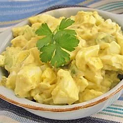

Egg Salad

Creamy egg salad with a little tang. Can serve 2
Ingredients
- 5 eggs
- 3 tablespoons mayonnaise
- 2 tablespoons Dijon mustard
- 2 tablespoons sweet pickle relish
- 1 tablespoon steak sauce
- 0.25 teaspoon paprika
- 0.25 teaspoon dried dill weed
- salt and ground black pepper to taste
- 1 pinch cayenne pepper
Steps
- Place eggs in a saucepan and cover with water. Bring to a boil, remove from heat, and let eggs stand in hot water for 15 minutes. Remove eggs from hot water, cool under cold running water, and peel.
- Chop eggs and transfer to a large bowl.
- Stir mayonnaise, Dijon mustard, sweet pickle relish, steak sauce, paprika, and dill into eggs until well mixed; season with salt and black pepper. Cover and refrigerate until chilled, if desired.
- Sprinkle with cayenne pepper before serving.